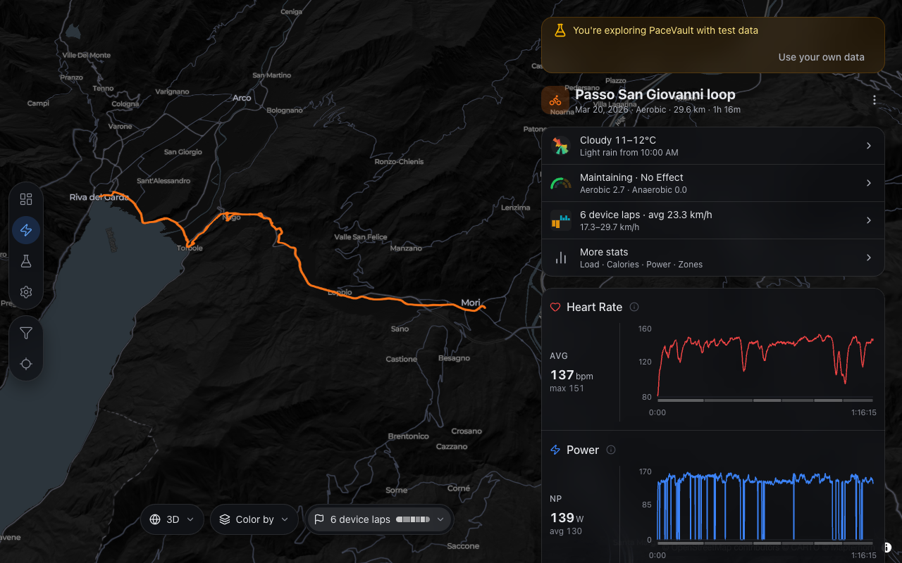
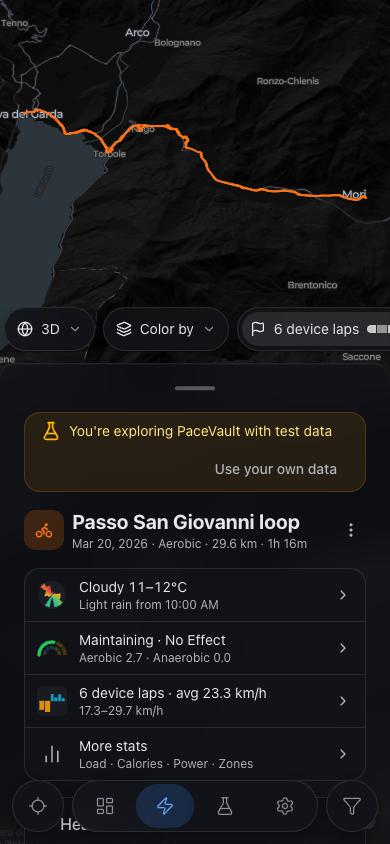
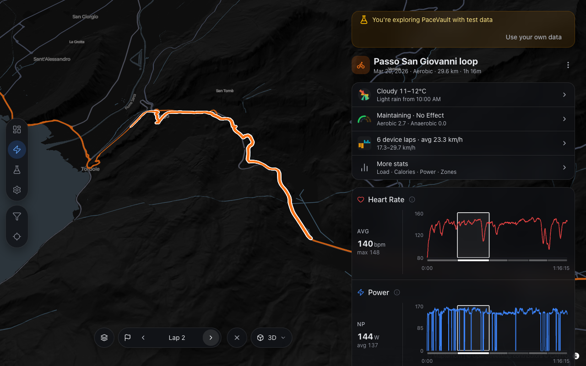
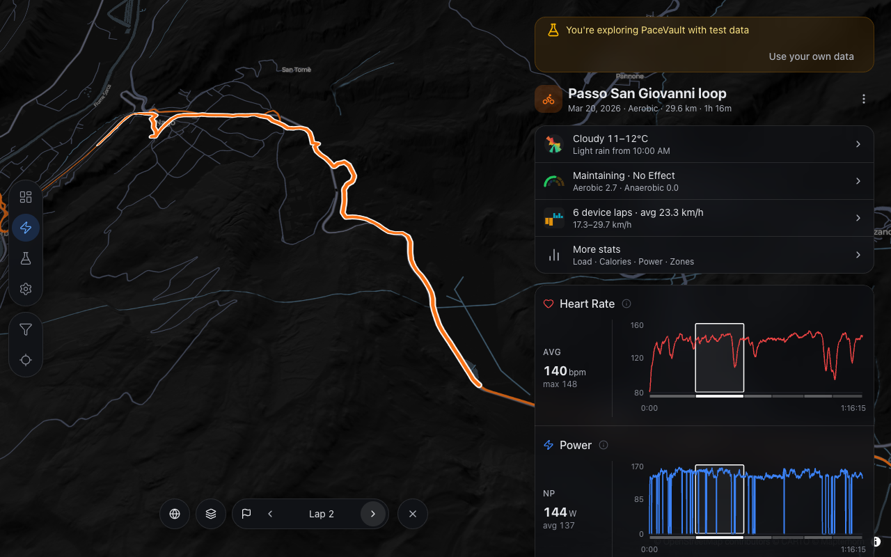

R13D lap close and lap fit frame the track in the free area
Fixed (on C4, Q58). The 3D fit no longer zooms out by a fixed step. It projects 64 sampled track points plus the four outermost ones on the terrain and corrects zoom and centre up to three times, so the track fills the free map area beside the panel or above the sheet. Closing a lap now lands at zoom 11.79 instead of 11.07 (desktop, 30°), 12.73 at 60° / bearing 40, and 11.01 on the phone with the track clear of the sheet (perf.md › R1 framing). Round 1 had no lap-closed scene, so that shot is after-only.
apps/web/src/features/map/terrainCamera.ts:226 (fitCorrection), :265 (fitSamples), :282, :305, :321 (pitchAwareFit), :351 (terrainFitTarget); apps/web/src/features/map/hooks/useMapCameraEffect.ts:240, :364
Desktop · 1280 × 800 · 3D, lap 2 selected, then closed with ✕

AfterPhone · 390 × 844 · 3D, lap closed

Desktop · 1280 × 800 · 3D, lap 2 via the stepper (lap fit)drag to compare


BeforeAfter